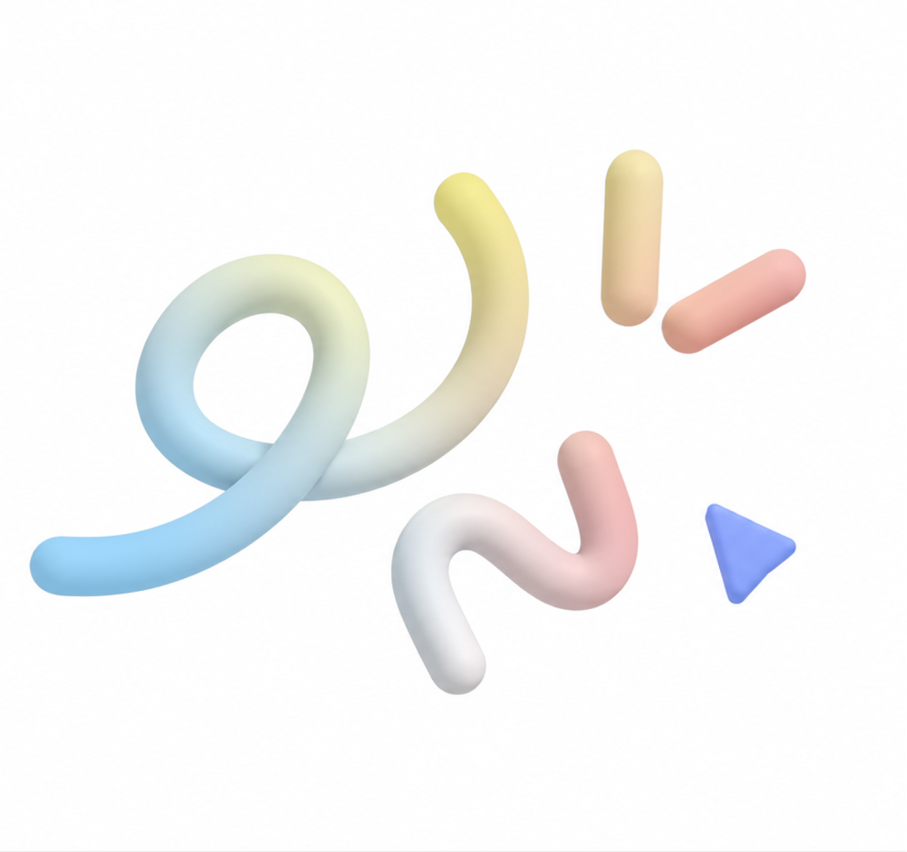

Hi, I’m Yeonji Ku
a 3D Artist.
Yeonji Ku is a 3D artist based in Seoul, South Korea, specializing in stylized environments, character modeling, and game-ready assets.
In 2022, she began her studies in Graphic Design at Northern Virginia Community College, pursuing an associate degree. In 2024, she transferred to the Computer Game Design program at George Mason University Korea, drawn to the intersection of art and technology. She is currently pursuing a Bachelor of Fine Arts in Computer Game Design at George Mason University, with an expected graduation in December 2026.
With a background in graphic design and interactive media, she combines artistic creativity with technical expertise in 3D modeling, sculpting, retopology, UV mapping, and real-time asset integration. Driven by her passion for creating meaningful experiences through art, she aims to bring creative ideas to life and enrich the way people interact with digital worlds.
